黑屏，只有雨声与远处金属棚顶回响。
机位 黑屏。
声音 雨声、空旷混响。
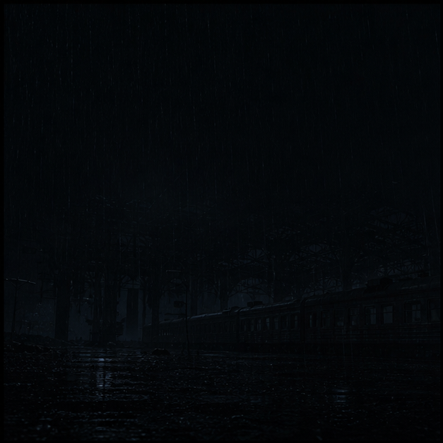
PASS ? V5_OP01-1_black_rain_station_outline_keyframe_v1_PASS.png
源文件?episodes/season_01/episode_01/keyframes/v5_full_grid_batch_v1/V5_OP01-1_black_rain_station_outline_keyframe_v1_PASS.png旧广播残音第一次浮现。
机位 黑屏。
声音 广播：“回候车区等——”
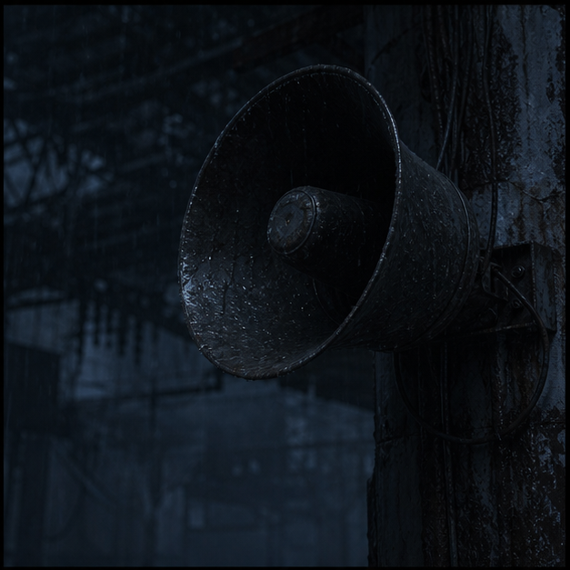
PASS ? V5_OP01-2_old_broadcast_speaker_dark_keyframe_v1_PASS.png
源文件?episodes/season_01/episode_01/keyframes/v5_full_grid_batch_v1/V5_OP01-2_old_broadcast_speaker_dark_keyframe_v1_PASS.png第三遍广播突然断裂。
机位 黑屏切极暗废站轮廓。
声音 电流噪声切断。
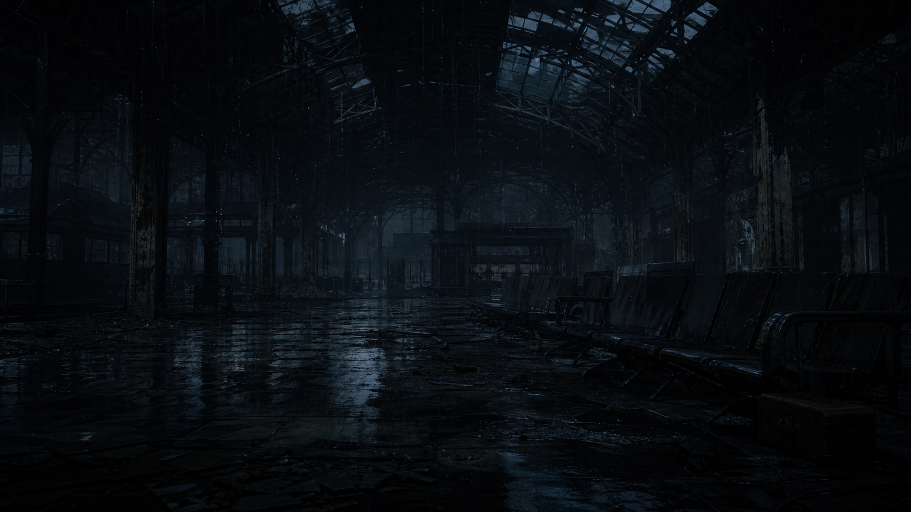
NEEDS_REVIEW ? V5_OP01-3_极暗废站轮廓_关键帧_v1.png
源文件?episodes/season_01/episode_01/keyframes/v5_op01_op08_batch_v1/V5_OP01-3_极暗废站轮廓_关键帧_v1.png废弃旧北站大厅建立，积水、破玻璃、长椅、旧闸机。
机位 大全景，极慢推。
声音 雨声、空站风声。
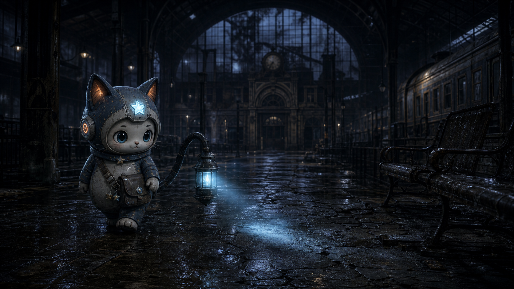
PASS ? V5_OP02-1_废站大厅澪星尾灯进入_关键帧_v2_MIOXING_LOCK.png
源文件?episodes/season_01/episode_01/keyframes/v5_op01_op08_batch_v1/V5_OP02-1_废站大厅澪星尾灯进入_关键帧_v2_MIOXING_LOCK.png澪星从暗处进入，尾灯扫过湿地。
机位 低机位跟尾灯。
声音 轻微机械步声。
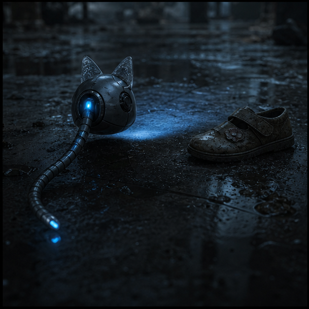
PASS ? V5_OP02-2_mioxing_tail_lamp_sweeps_shoe_keyframe_v1_PASS.png
源文件?episodes/season_01/episode_01/keyframes/v5_full_grid_batch_v1/V5_OP02-2_mioxing_tail_lamp_sweeps_shoe_keyframe_v1_PASS.png尾灯扫过碎玻璃、旧票根、隔离线。
机位 低机位横移。
声音 尾灯轻响。
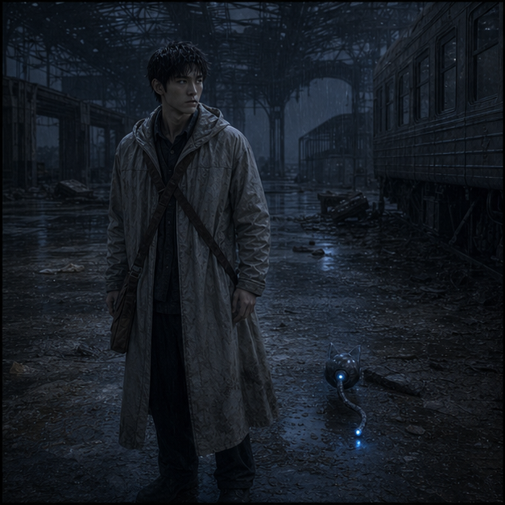
PASS ? V5_OP02-3_lan_bingyu_enters_ruined_station_keyframe_v2_PASS.png
源文件?episodes/season_01/episode_01/keyframes/v5_full_grid_batch_v1/V5_OP02-3_lan_bingyu_enters_ruined_station_keyframe_v2_PASS.png尾灯停住，照到儿童鞋边缘。
机位 低机位停。
声音 雨声压低。
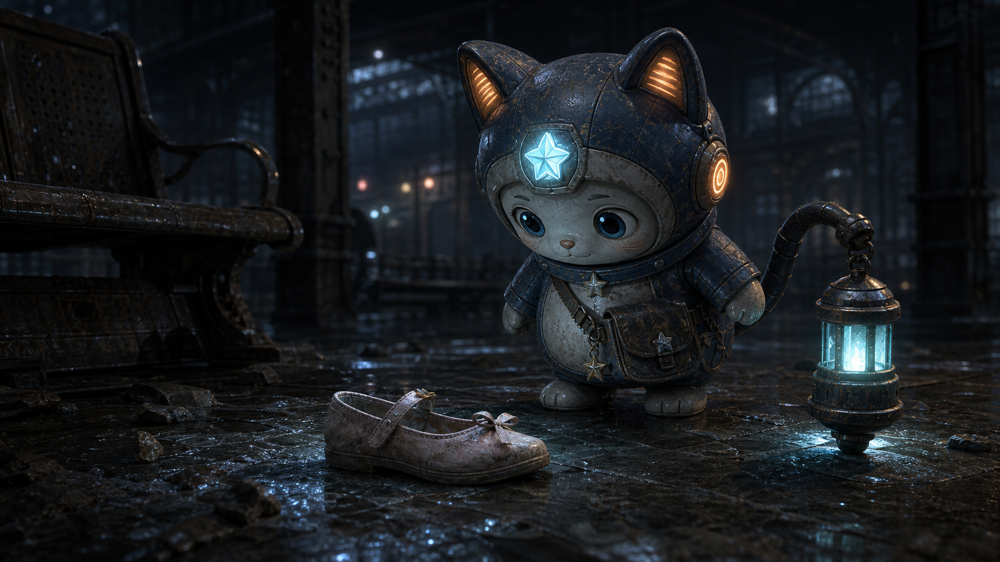
PASS ? V5_OP02-4_澪星尾灯停在儿童鞋边缘_关键帧_v2_MIOXING_LOCK_PRE_SHOE.png
源文件?episodes/season_01/episode_01/keyframes/v5_op01_op08_batch_v1/V5_OP02-4_澪星尾灯停在儿童鞋边缘_关键帧_v2_MIOXING_LOCK_PRE_SHOE.png褪色淡粉米白儿童鞋特写，鞋口积水。
机位 静物特写，极慢推。
声音 雨滴落水声。
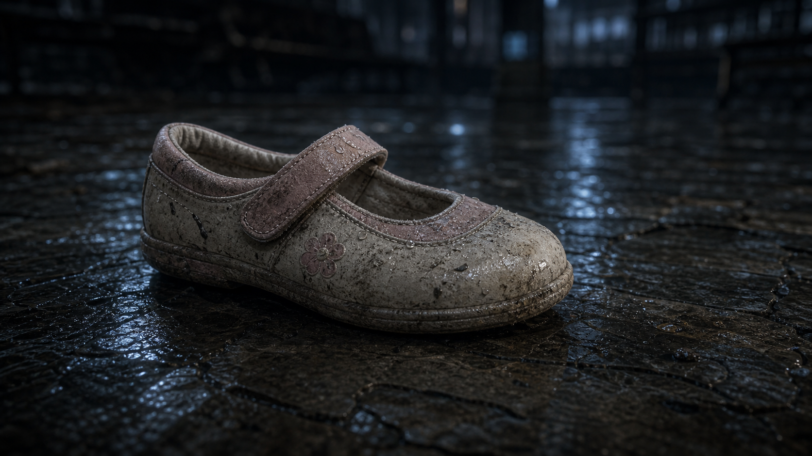
PASS ? V5_OP03-1_褪色儿童鞋特写_关键帧_v2_SHOE_LOCK.png
源文件?episodes/season_01/episode_01/keyframes/v5_op01_op08_batch_v1/V5_OP03-1_褪色儿童鞋特写_关键帧_v2_SHOE_LOCK.png澪星尾灯照亮鞋面小花纹和魔术贴。
机位 特写保持。
声音 尾灯低鸣。
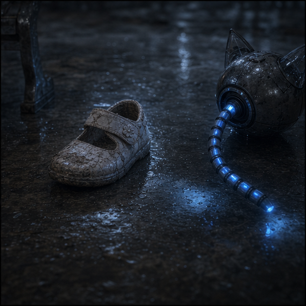
PASS ? V5_OP03-2_shoe_water_bench_mioxing_closeup_keyframe_v1_PASS.png
源文件?episodes/season_01/episode_01/keyframes/v5_full_grid_batch_v1/V5_OP03-2_shoe_water_bench_mioxing_closeup_keyframe_v1_PASS.png澜冰屿画外音出现。
机位 从鞋特写轻轻拉出一点。
声音 澜冰屿：“又有人没回家吗。”
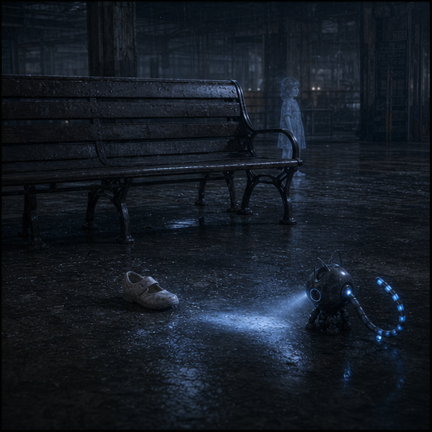
PASS ? V5_OP03-3_bench_shoe_echo_space_relation_keyframe_v1_PASS.png
源文件?episodes/season_01/episode_01/keyframes/v5_full_grid_batch_v1/V5_OP03-3_bench_shoe_echo_space_relation_keyframe_v1_PASS.png澜冰屿从黑暗里走出，半蹲。
机位 中景，低角度。
声音 脚步踩水。
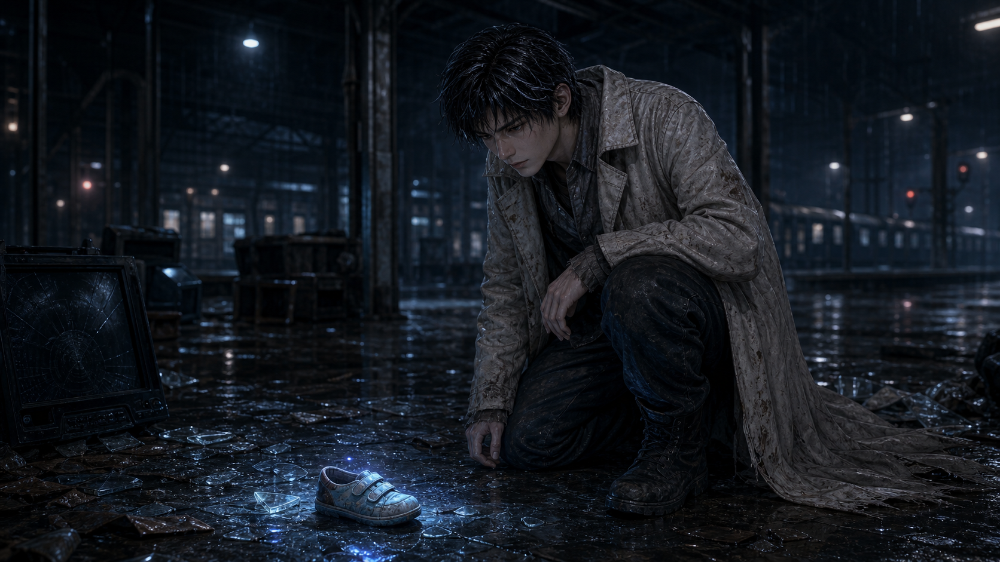
NEEDS_REVIEW ? V5_OP04-1_澜冰屿半蹲确认鞋是坐标_关键帧_v1.png
源文件?episodes/season_01/episode_01/keyframes/v5_op01_op08_batch_v1/V5_OP04-1_澜冰屿半蹲确认鞋是坐标_关键帧_v1.png他观察鞋底、水痕和停留方向。
机位 中近景切手眼。
声音 无台词。
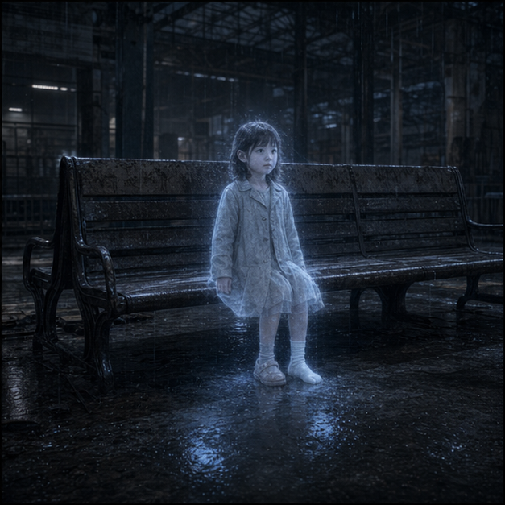
NEEDS_REVIEW ? V5_OP04-2_xiaxia_echo_appears_by_bench_keyframe_v1_NEEDS_REVIEW.png
源文件?episodes/season_01/episode_01/keyframes/v5_full_grid_batch_v1/V5_OP04-2_xiaxia_echo_appears_by_bench_keyframe_v1_NEEDS_REVIEW.png澪星尾灯轻颤，指向候车区深处。
机位 低机位。
声音 机械轻响。
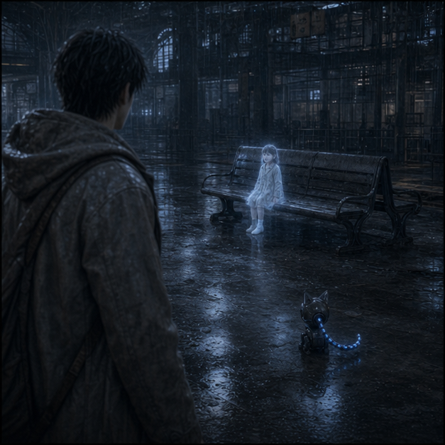
PASS ? V5_OP04-3_lan_sees_xiaxia_echo_first_time_keyframe_v1_PASS.png
源文件?episodes/season_01/episode_01/keyframes/v5_full_grid_batch_v1/V5_OP04-3_lan_sees_xiaxia_echo_first_time_keyframe_v1_PASS.png澜冰屿低声判断。
机位 近景。
声音 “不是遗失物。是坐标。”
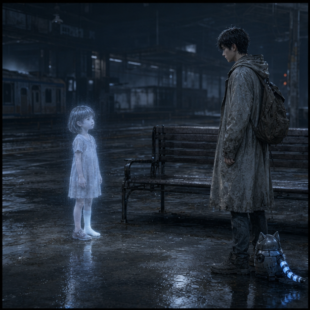
NEEDS_REVIEW ? V5_OP04-4_lan_and_xiaxia_share_frame_keyframe_v1_NEEDS_REVIEW.png
源文件?episodes/season_01/episode_01/keyframes/v5_full_grid_batch_v1/V5_OP04-4_lan_and_xiaxia_share_frame_keyframe_v1_NEEDS_REVIEW.png澜冰屿指尖碰到鞋边。
机位 手部特写。
声音 电流轻响。
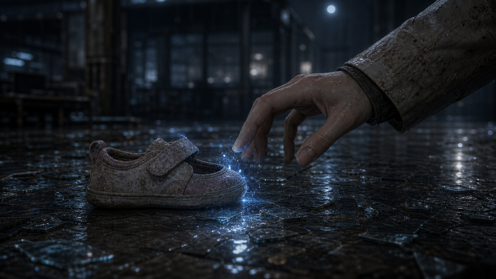
NEEDS_REVIEW ? V5_OP05-1_澜冰屿指尖触碰鞋边_关键帧_v1.png
源文件?episodes/season_01/episode_01/keyframes/v5_op01_op08_batch_v1/V5_OP05-1_澜冰屿指尖触碰鞋边_关键帧_v1.png闪回：事故当天低机位，小夏右脚鞋被卡住并脱落，右脚白袜出现。
机位 事故碎片快闪。
声音 人群、行李碰撞。
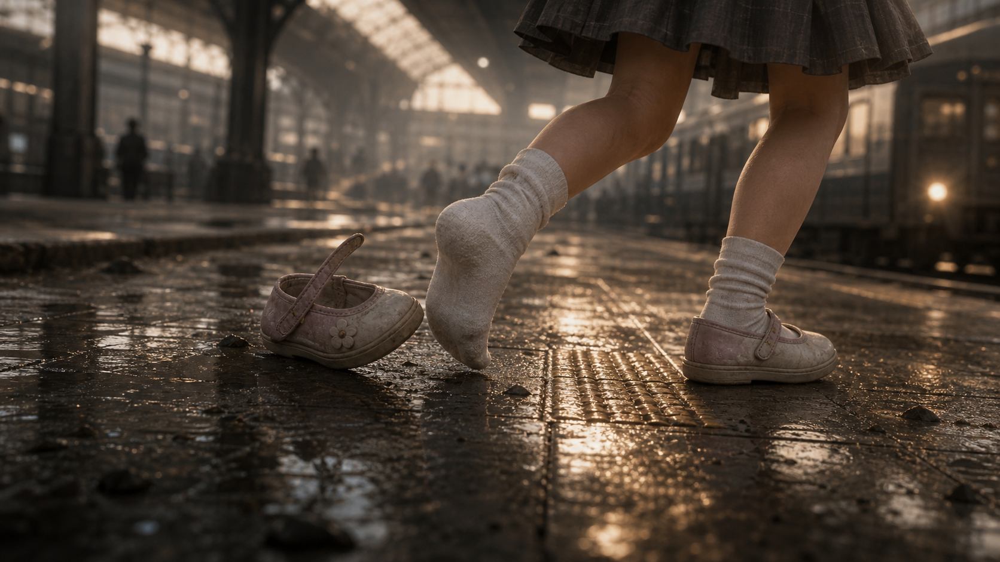
PASS ? V5_OP05-2_事故闪回小夏右脚鞋脱落_关键帧_v3_SHOE_LOCK.png
源文件?episodes/season_01/episode_01/keyframes/v5_op01_op08_batch_v1/V5_OP05-2_事故闪回小夏右脚鞋脱落_关键帧_v3_SHOE_LOCK.png回到雨夜，澜冰屿停手。
机位 鞋与手同框。
声音 雨声回归。
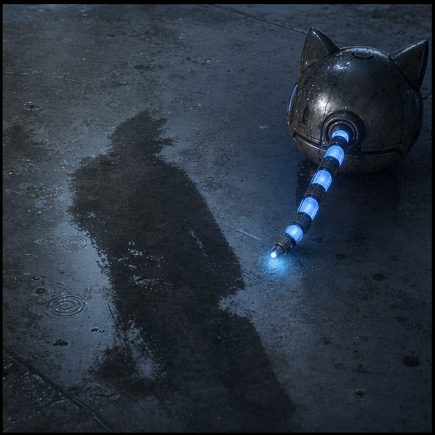
PASS ? V5_OP05-3_mioxing_tail_lamp_lan_shadow_keyframe_v1_PASS.png
源文件?episodes/season_01/episode_01/keyframes/v5_full_grid_batch_v1/V5_OP05-3_mioxing_tail_lamp_lan_shadow_keyframe_v1_PASS.png旧长椅旁浮出小夏淡影。
机位 中远景，慢慢显影。
声音 远处儿童呼吸声。
NEEDS_REVIEW ? OP06-1_日常牵手继续前行_关键帧_v1.png
源文件?episodes/season_01/episode_01/keyframes/op06_op12_director_v1/OP06-1_日常牵手继续前行_关键帧_v1.png小夏抱衣角，右脚白袜，左脚单鞋。
机位 中近景。
声音 无台词。
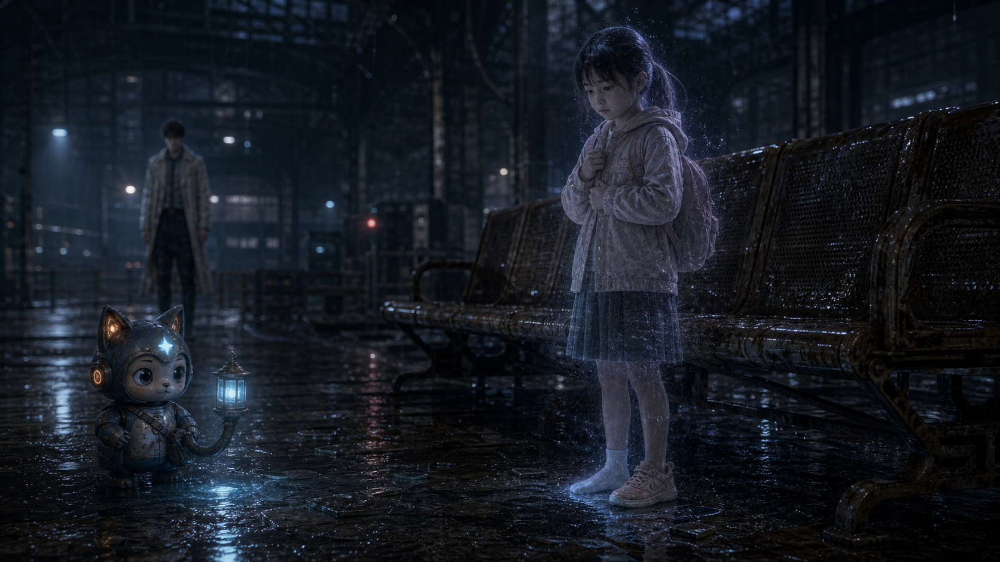
NEEDS_REVIEW ? V5_OP06-2_小夏等待回声显现_关键帧_v1.png
源文件?episodes/season_01/episode_01/keyframes/v5_op01_op08_batch_v1/V5_OP06-2_小夏等待回声显现_关键帧_v1.png她看向澜冰屿和澪星。
机位 反打。
声音 小夏：“你们……是来接人的吗？”
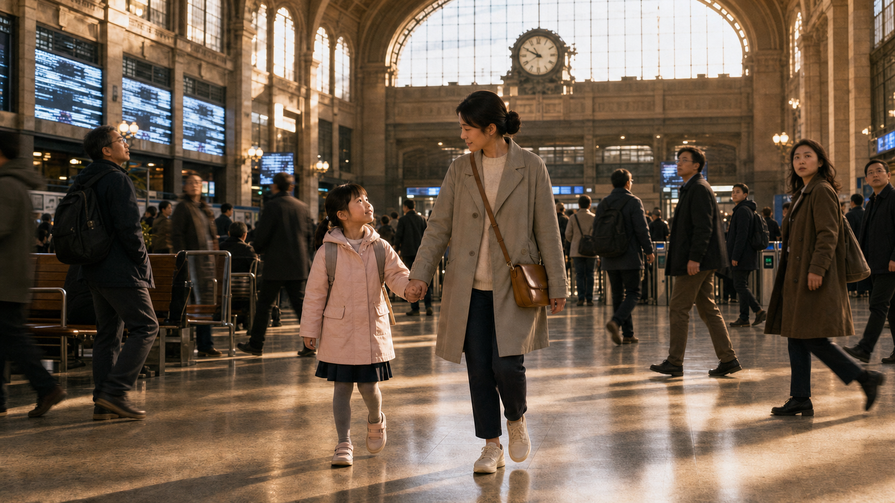
NEEDS_REVIEW ? OP06-3_少数乘客疑惑抬头_关键帧_v1.png
源文件?episodes/season_01/episode_01/keyframes/op06_op12_director_v1/OP06-3_少数乘客疑惑抬头_关键帧_v1.png澜冰屿放低姿态。
机位 中景。
声音 “我们来找没回家的人。”
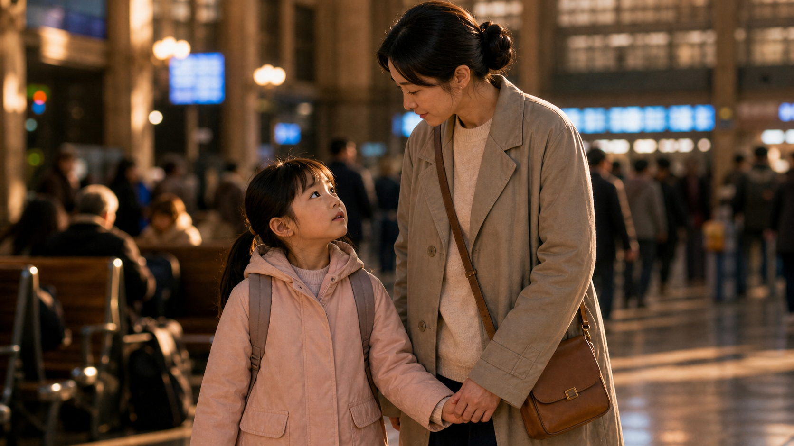
NEEDS_REVIEW ? OP06-4_小夏抬头看妈妈疑惑_同背景修正版_v2.png
源文件?episodes/season_01/episode_01/keyframes/op06_op12_director_v1/OP06-4_小夏抬头看妈妈疑惑_同背景修正版_v2.png澜冰屿提出可以带她去找妈妈。
机位 中景对话。
声音 澜冰屿轻声。
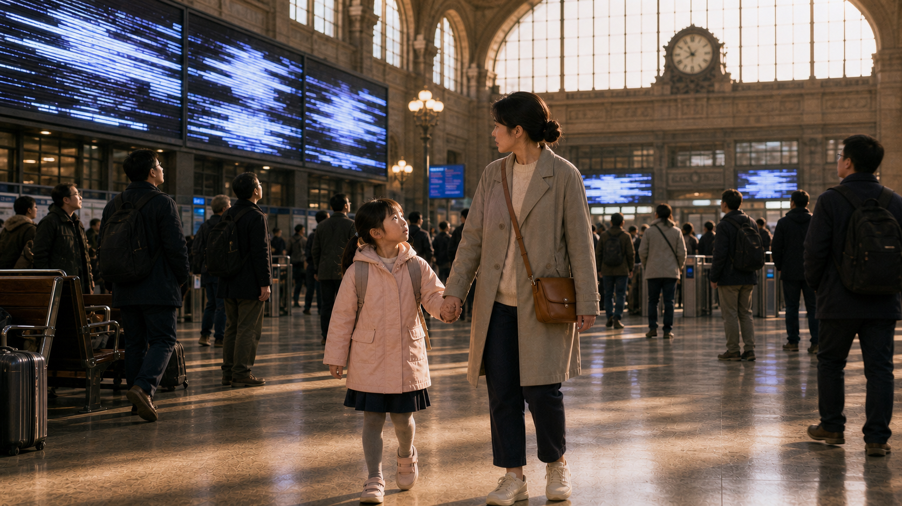
NEEDS_REVIEW ? OP07-1_电子屏故障增强_关键帧_v1.png
源文件?episodes/season_01/episode_01/keyframes/op06_op12_director_v1/OP07-1_电子屏故障增强_关键帧_v1.png小夏立刻后退。
机位 中近景。
声音 小夏：“不行。”
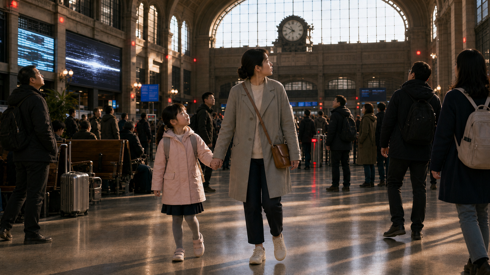
NEEDS_REVIEW ? OP07-2_少量警示灯亮起_关键帧_v1.png
源文件?episodes/season_01/episode_01/keyframes/op06_op12_director_v1/OP07-2_少量警示灯亮起_关键帧_v1.png隔离门残影从地面升起，空间重置。
机位 中远景，门影切开画面。
声音 金属升起残响。
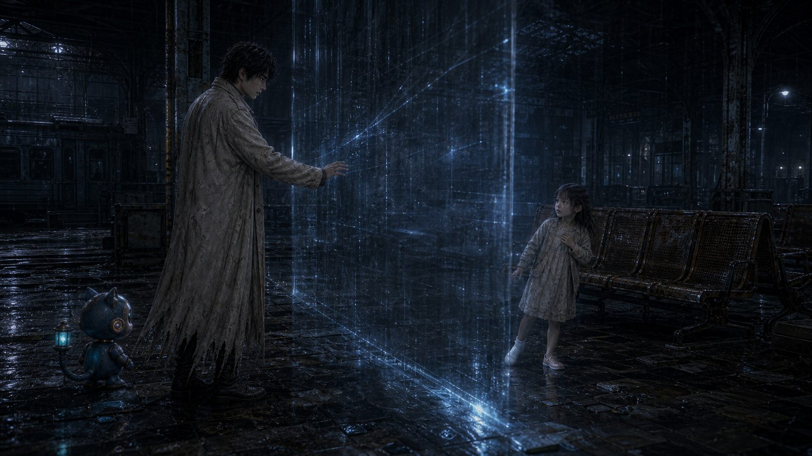
NEEDS_REVIEW ? V5_OP07-3_第一次救援失败隔离门残影_关键帧_v1.png
源文件?episodes/season_01/episode_01/keyframes/v5_op01_op08_batch_v1/V5_OP07-3_第一次救援失败隔离门残影_关键帧_v1.png小夏说怕妈妈接不到她；澜冰屿收手。
机位 反打。
声音 小夏台词，澜冰屿：“不能硬带她走。”
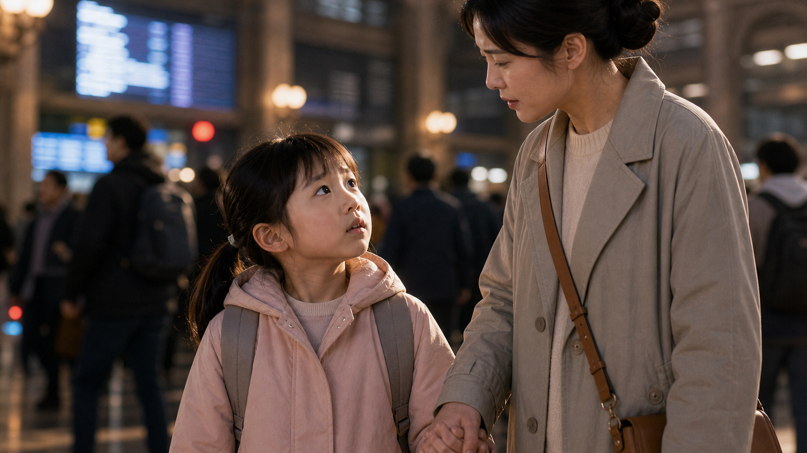
NEEDS_REVIEW ? OP07-4_小夏问妈妈怎么了_关键帧_v1.png
源文件?episodes/season_01/episode_01/keyframes/op06_op12_director_v1/OP07-4_小夏问妈妈怎么了_关键帧_v1.png澪星尾灯转向长椅扶手。
机位 尾灯主观。
声音 轻微机械声。
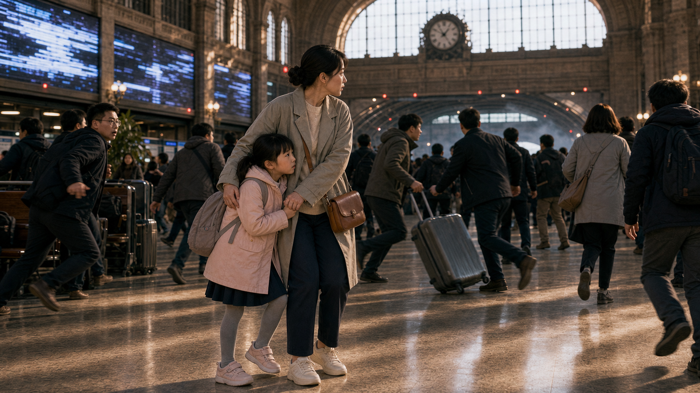
NEEDS_REVIEW ? OP08-1_连廊方向巨响落尘_关键帧_v1.png
源文件?episodes/season_01/episode_01/keyframes/op06_op12_director_v1/OP08-1_连廊方向巨响落尘_关键帧_v1.png扶手上出现第一个、第二个“正”字。
机位 特写慢推。
声音 雨滴声变清楚。
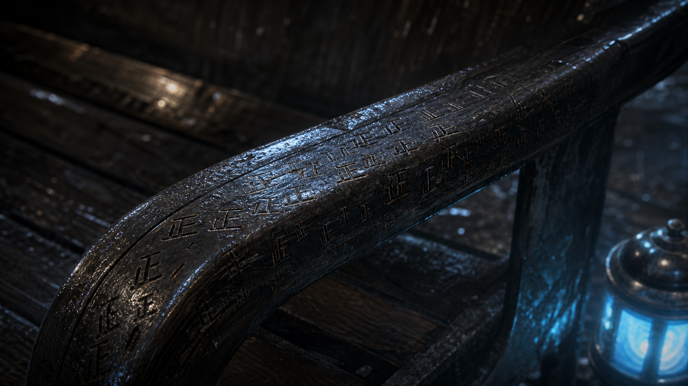
NEEDS_REVIEW ? V5_OP08-2_P0长椅正字刻痕特写_关键帧_v1.png
源文件?episodes/season_01/episode_01/keyframes/v5_op01_op08_batch_v1/V5_OP08-2_P0长椅正字刻痕特写_关键帧_v1.png镜头继续移动，刻痕密密麻麻。
机位 横移特写。
声音 无台词。
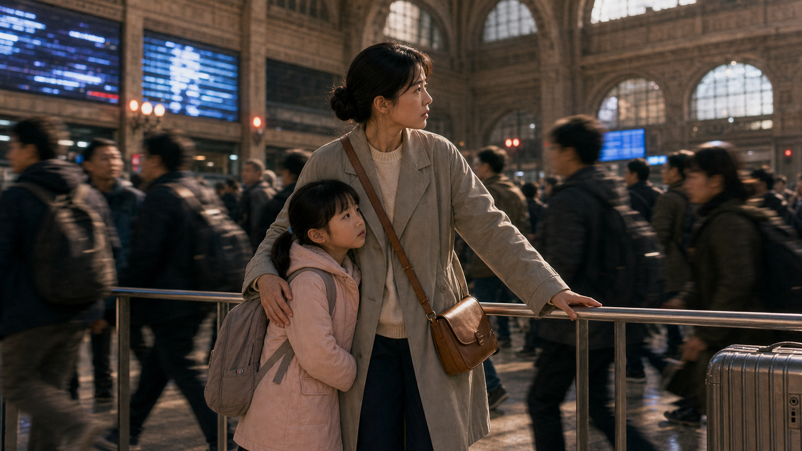
NEEDS_REVIEW ? OP08-3_妈妈把小夏护到内侧_关键帧_v1.png
源文件?episodes/season_01/episode_01/keyframes/op06_op12_director_v1/OP08-3_妈妈把小夏护到内侧_关键帧_v1.png澜冰屿沉默看刻痕。
机位 近景。
声音 小夏：“我怕我睡着了，她来的时候我不知道。”
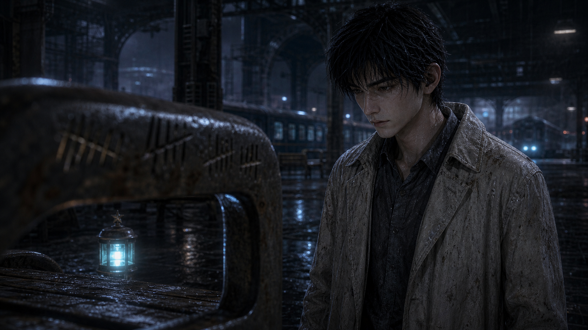
NEEDS_REVIEW ? V5_OP08-4_澜冰屿沉默看刻痕_关键帧_v1.png
源文件?episodes/season_01/episode_01/keyframes/v5_op01_op08_batch_v1/V5_OP08-4_澜冰屿沉默看刻痕_关键帧_v1.png儿童鞋、水痕、长椅三者同框，澪星尾灯扫出一条微弱等待边界。
机位 低机位中近景，极慢推。
声音 雨声、尾灯轻响。
NEEDS_REVIEW ? OP09-1_低机位脚步行李压迫_关键帧_v1.png
源文件?episodes/season_01/episode_01/keyframes/op06_op12_director_v1/OP09-1_低机位脚步行李压迫_关键帧_v1.png澜冰屿蹲在鞋与长椅之间，视线从鞋转到长椅。
机位 侧面中景。
声音 无台词。
NEEDS_REVIEW ? OP09-2_右脚鞋被行李卡住_关键帧_v1.png
源文件?episodes/season_01/episode_01/keyframes/op06_op12_director_v1/OP09-2_右脚鞋被行李卡住_关键帧_v1.png地面积水里短暂出现事故当天小夏停下的脚印残影。
机位 水面特写，轻微波纹。
声音 远处残缺广播微弱。
NEEDS_REVIEW ? OP09-3_右脚鞋脱落露出白袜_关键帧_v1.png
源文件?episodes/season_01/episode_01/keyframes/op06_op12_director_v1/OP09-3_右脚鞋脱落露出白袜_关键帧_v1.png澜冰屿低声判断：鞋只是标记她停下来的地方。
机位 近景，压低视线。
声音 澜冰屿：“鞋只是标记她停下来的地方。”
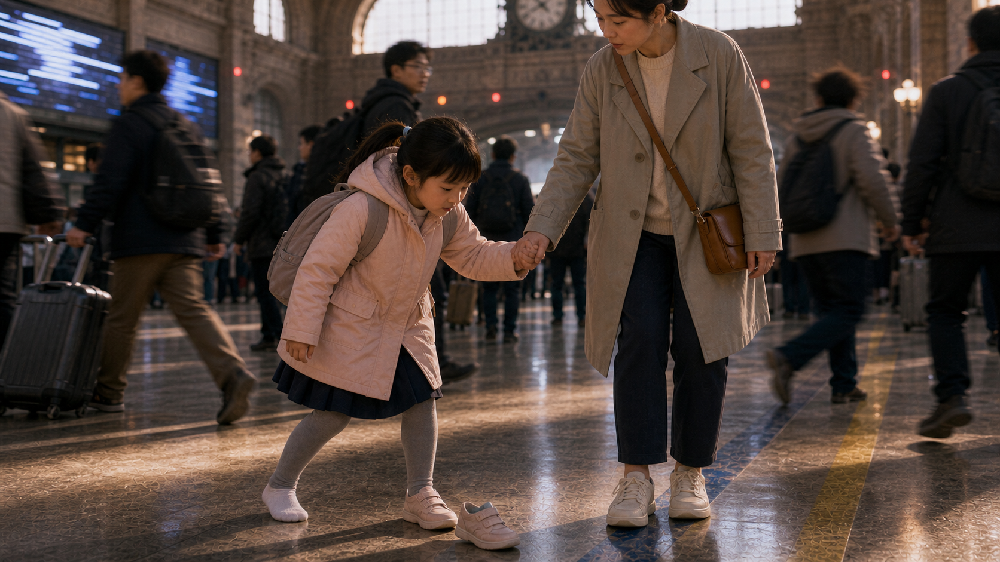
NEEDS_REVIEW ? OP09-4_小夏低头想捡鞋_关键帧_v1.png
源文件?episodes/season_01/episode_01/keyframes/op06_op12_director_v1/OP09-4_小夏低头想捡鞋_关键帧_v1.png废站广播台特写，外壳锈蚀、线路外露、积水反光。
机位 近景，极慢推。
声音 雨声、电流底噪。
NEEDS_REVIEW ? OP10-1_白袜单鞋牵手警示线_关键帧_v1.png
源文件?episodes/season_01/episode_01/keyframes/op06_op12_director_v1/OP10-1_白袜单鞋牵手警示线_关键帧_v1.png澪星尾灯照进广播台缝隙，旧扬声器轻微震动。
机位 细节近景。
声音 噪声逐渐成形。
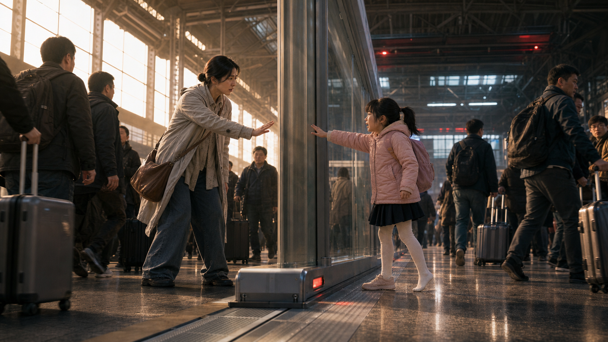
NEEDS_REVIEW ? OP10-2_隔离栏从两人之间急速升起_关键帧_v1.png
源文件?episodes/season_01/episode_01/keyframes/op10_op12_grid_v1/OP10-2_隔离栏从两人之间急速升起_关键帧_v1.png闪回碎片：事故当天妈妈在人潮远处扭身喊“回候车区等——”。
机位 事故碎片长焦中景。
声音 妈妈残音：“回候车区等——”
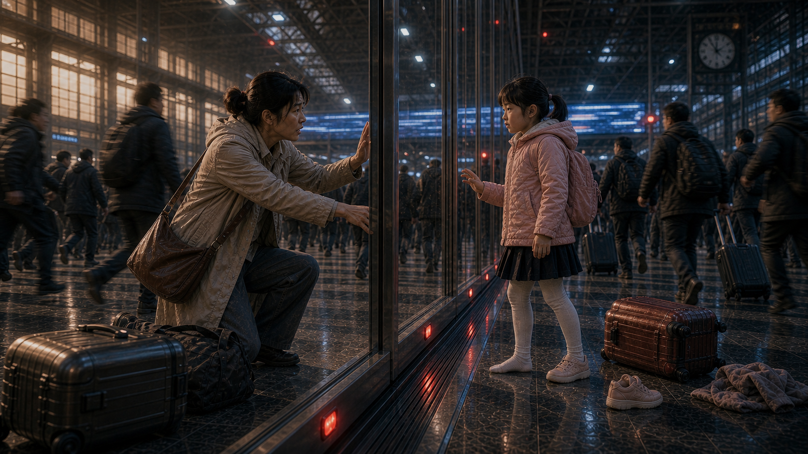
NEEDS_REVIEW ? OP10-3_妈妈意识到继续牵手会伤到小夏_关键帧_v1.png
源文件?episodes/season_01/episode_01/keyframes/op10_op12_grid_v1/OP10-3_妈妈意识到继续牵手会伤到小夏_关键帧_v1.png回到废站，声音断裂，澜冰屿意识到这只是半句话。
机位 澜冰屿近景 / 广播台反打。
声音 电流突然切断。
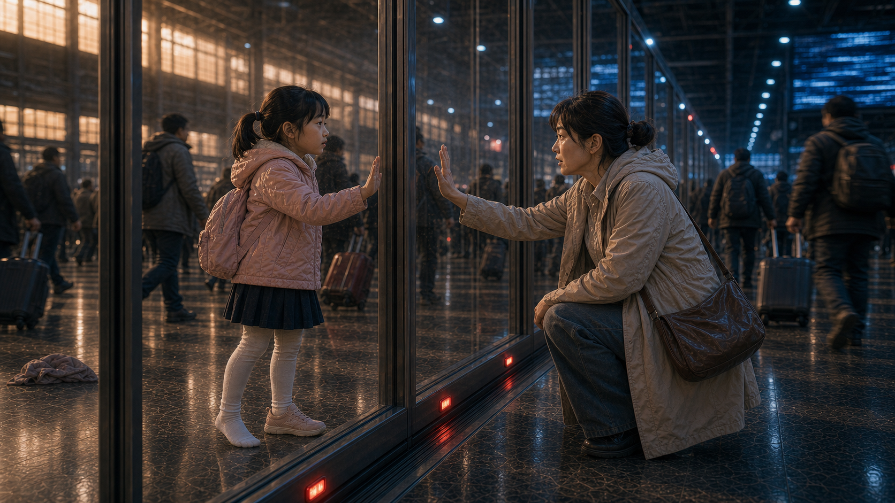
NEEDS_REVIEW ? OP10-4_妈妈保护性松手把小夏挡向安全侧_关键帧_v1.png
源文件?episodes/season_01/episode_01/keyframes/op10_op12_grid_v1/OP10-4_妈妈保护性松手把小夏挡向安全侧_关键帧_v1.png废站里隔离门旧轨道被尾灯照亮，地面残留冷白线。
机位 低机位轨道特写。
声音 金属残响。
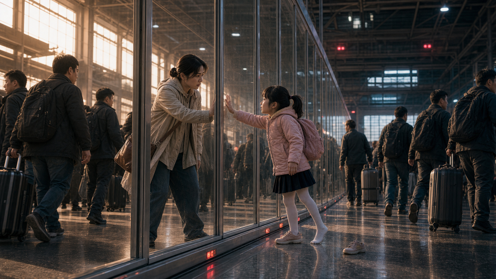
NEEDS_REVIEW ? OP11-1_隔离门完全升起锁死_关键帧_v1.png
源文件?episodes/season_01/episode_01/keyframes/op10_op12_grid_v1/OP11-1_隔离门完全升起锁死_关键帧_v1.png事故残影叠入：小夏右脚白袜、左脚单鞋，妈妈仍牵着她。
机位 脚部与手部关系特写。
声音 警报低频进入。
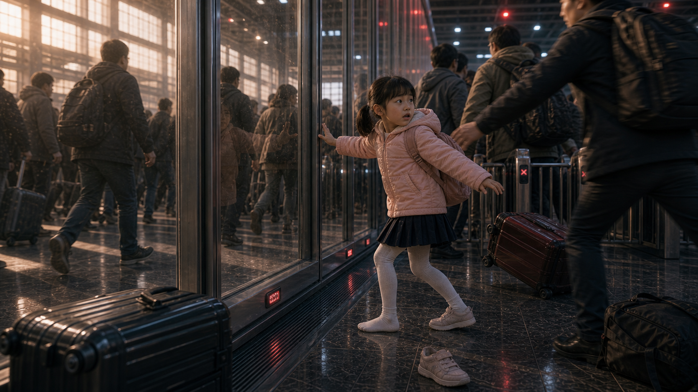
NEEDS_REVIEW ? OP11-2_小夏候车区侧手贴透明板发怔_关键帧_v1.png
源文件?episodes/season_01/episode_01/keyframes/op10_op12_grid_v1/OP11-2_小夏候车区侧手贴透明板发怔_关键帧_v1.png隔离门残影从母女之间升起，继续牵着会伤到小夏手臂。
机位 手部极近景，门影上升。
声音 金属上升声。
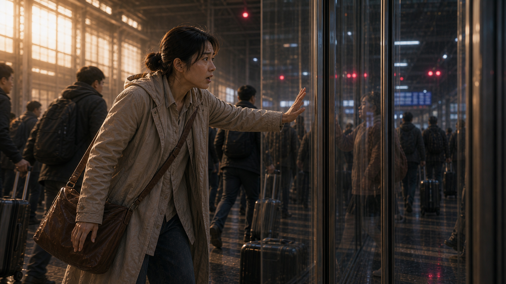
NEEDS_REVIEW ? OP11-3_妈妈扑到门前用力敲打门体_关键帧_v1.png
源文件?episodes/season_01/episode_01/keyframes/op10_op12_grid_v1/OP11-3_妈妈扑到门前用力敲打门体_关键帧_v1.png妈妈保护性松手，把小夏挡向候车区安全侧。
机位 中近景，可轻慢动作。
声音 妈妈急喊：“小夏！”
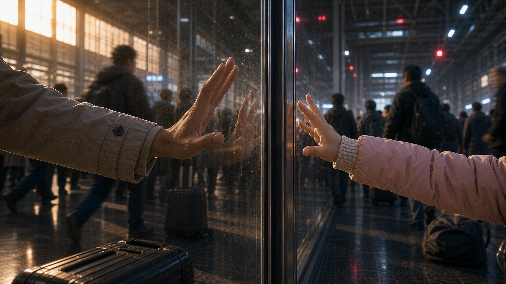
NEEDS_REVIEW ? OP11-4_妈妈沿门侧寻找应急开关_关键帧_v1.png
源文件?episodes/season_01/episode_01/keyframes/op10_op12_grid_v1/OP11-4_妈妈沿门侧寻找应急开关_关键帧_v1.png回到废站残影消退，澜冰屿低声判断。
机位 澜冰屿近景，隔离门残影在背后淡去。
声音 澜冰屿：“她松手，是为了让小夏活下来。”
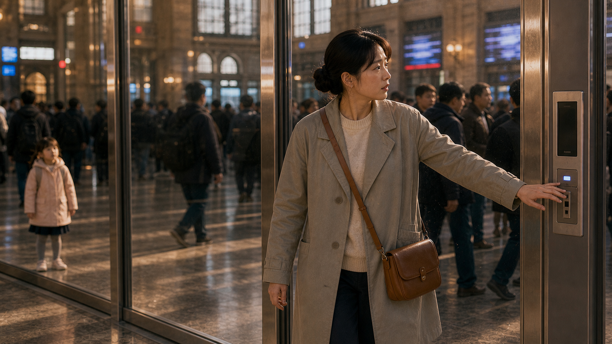
NEEDS_REVIEW ? OP11-5_妈妈寻找应急开关_关键帧_v1.png
源文件?episodes/season_01/episode_01/keyframes/op06_op12_director_v1/OP11-5_妈妈寻找应急开关_关键帧_v1.png废站墙边损坏应急通话器，外壳裂开，按钮失灵。
机位 近景，固定。
声音 雨声、电流细响。
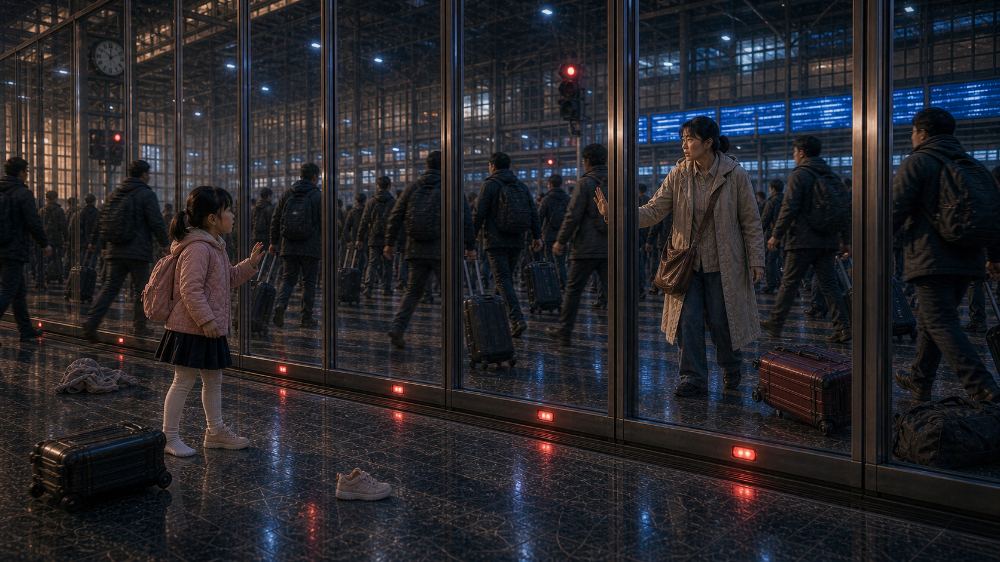
NEEDS_REVIEW ? OP12-1_人潮反冲妈妈被从门前推开_关键帧_v1.png
源文件?episodes/season_01/episode_01/keyframes/op10_op12_grid_v1/OP12-1_人潮反冲妈妈被从门前推开_关键帧_v1.png澪星尾灯贴近通话器，微弱声纹开始亮起。
机位 细节近景。
声音 后半句残音碎片。
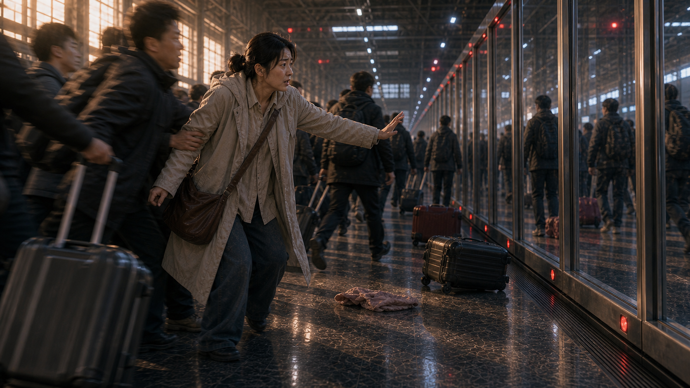
NEEDS_REVIEW ? OP12-2_妈妈被带往反方向仍扭身喊小夏_关键帧_v1.png
源文件?episodes/season_01/episode_01/keyframes/op10_op12_grid_v1/OP12-2_妈妈被带往反方向仍扭身喊小夏_关键帧_v1.png闪回碎片：妈妈被人潮推远，仍朝小夏方向伸手喊话。
机位 长焦中景，灰尘冷白光。
声音 “妈妈一定……会……”断裂。
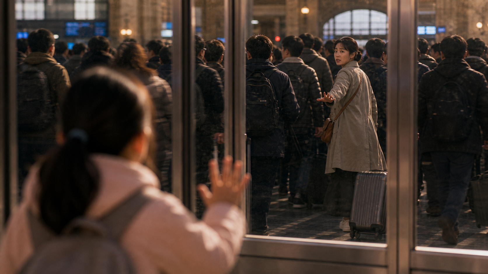
NEEDS_REVIEW ? OP12-3_妈妈在人潮中回身伸手_关键帧_v1.png
源文件?episodes/season_01/episode_01/keyframes/op06_op12_director_v1/OP12-3_妈妈在人潮中回身伸手_关键帧_v1.png废站中两段声音错位重叠，无法自然接上。
机位 抽象声波 / 空间扭曲中景。
声音 前半句、后半句互相错位。
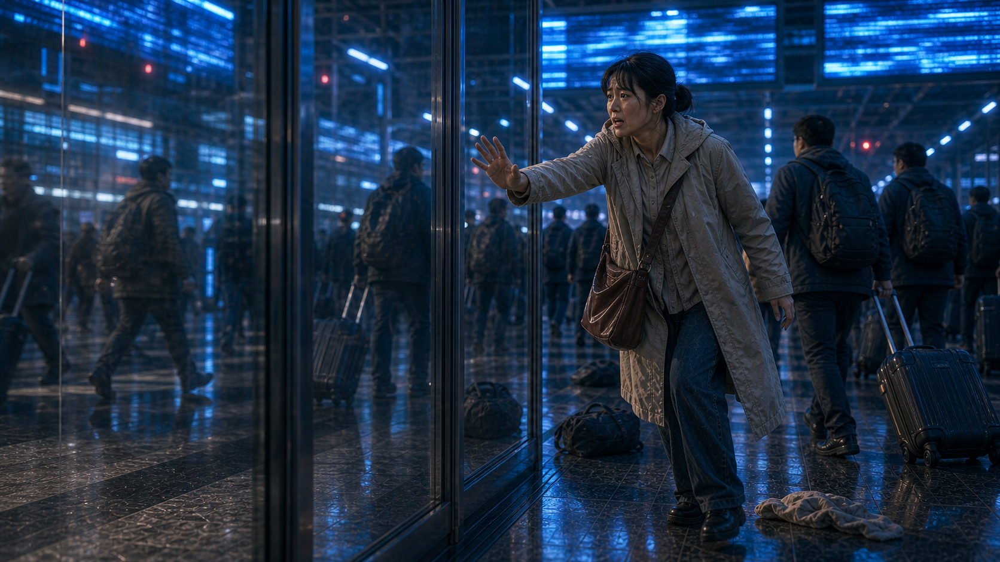
NEEDS_REVIEW ? OP12-4_妈妈喊回候车区等被人潮带远_关键帧_v1.png
源文件?episodes/season_01/episode_01/keyframes/op10_op12_grid_v1/OP12-4_妈妈喊回候车区等被人潮带远_关键帧_v1.png小夏听到残音，抬头问澜冰屿。
机位 小夏中近景。
声音 小夏轻声：“后面……还有吗？”
NEEDS_REVIEW ? OP12-5_无人鞋静音定格_关键帧_v1.png
源文件?episodes/season_01/episode_01/keyframes/op06_op12_director_v1/OP12-5_无人鞋静音定格_关键帧_v1.png澜冰屿站在广播台与应急通话器之间，两个声源分别在两侧。
机位 中远景，左右构图。
声音 两段残音错位播放。
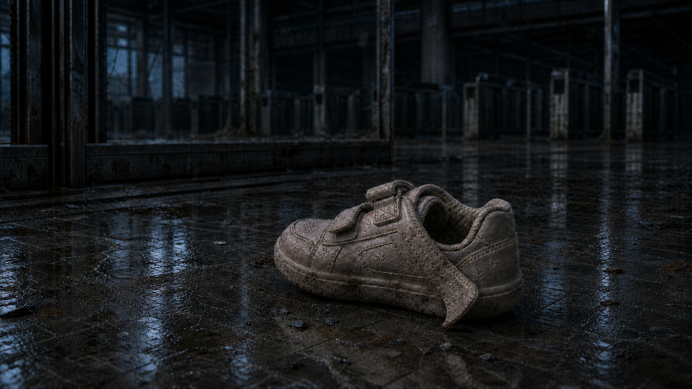
NEEDS_REVIEW ? OP13-1_严格同机位废站鞋_生产硬参考_v1.png
源文件?episodes/season_01/episode_01/keyframes/op06_op14_main_v1/OP13-1_严格同机位废站鞋_生产硬参考_v1.png地面积水中映出两条断开的回声线，无法自然相连。
机位 俯视 / 低机位特写。
声音 低频电流。
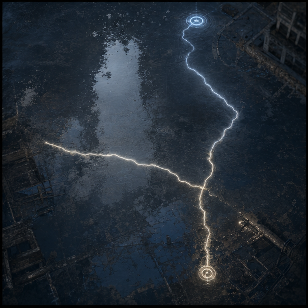
PASS ? V5_OP13-2_two_disconnected_echo_lines_reflection_keyframe_v1_PASS.png
源文件?episodes/season_01/episode_01/keyframes/v5_full_grid_batch_v1/V5_OP13-2_two_disconnected_echo_lines_reflection_keyframe_v1_PASS.png澪星尾灯短暂闪烁，像在提醒风险。
机位 低机位偏澪星。
声音 尾灯微鸣。
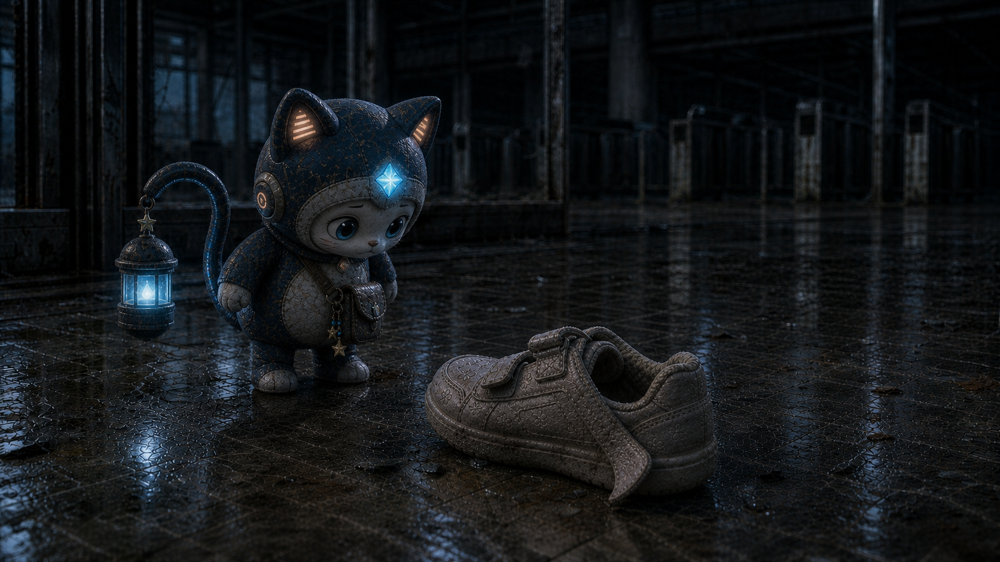
NEEDS_REVIEW ? OP13-3_澪星进入鞋前_统一背景硬参考_v1.png
源文件?episodes/season_01/episode_01/keyframes/op06_op14_main_v1/OP13-3_澪星进入鞋前_统一背景硬参考_v1.png澜冰屿低声说：可它们不在同一条回声里。
机位 澜冰屿近景。
声音 澜冰屿：“可它们不在同一条回声里。”
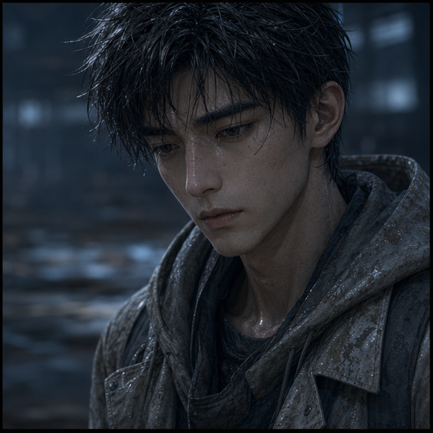
PASS ? V5_OP13-4_lan_realizes_not_same_echo_keyframe_v1_PASS.png
源文件?episodes/season_01/episode_01/keyframes/v5_full_grid_batch_v1/V5_OP13-4_lan_realizes_not_same_echo_keyframe_v1_PASS.png小夏站在长椅旁，认真看着澜冰屿。
机位 中近景，略低视角。
声音 小夏：“后面还说了吗？”
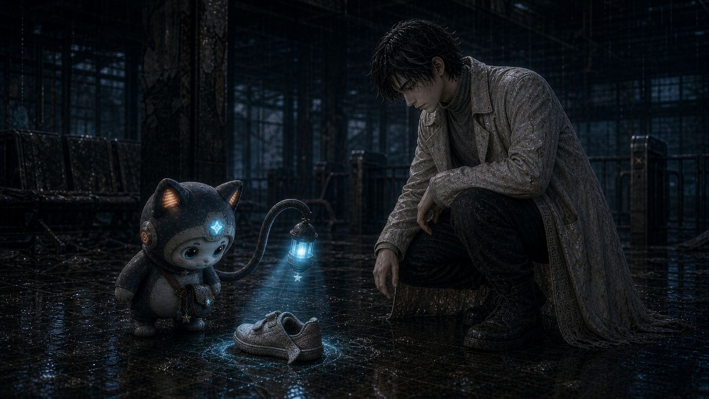
NEEDS_REVIEW ? OP14-1_澜冰屿侧面半蹲观察鞋_生产硬参考_v1.png
源文件?episodes/season_01/episode_01/keyframes/op06_op14_main_v1/OP14-1_澜冰屿侧面半蹲观察鞋_生产硬参考_v1.png澜冰屿没有马上回答，视线落到长椅刻痕和儿童鞋。
机位 近景反打。
声音 雨声短暂停顿感。
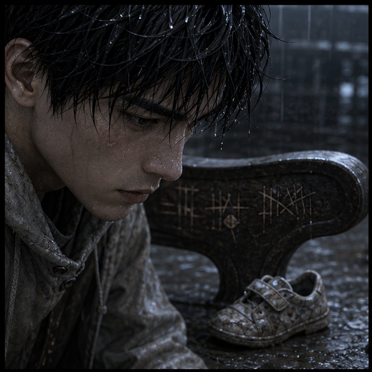
PASS ? V5_OP14-2_lan_looks_to_marks_and_shoe_keyframe_v1_PASS.png
源文件?episodes/season_01/episode_01/keyframes/v5_full_grid_batch_v1/V5_OP14-2_lan_looks_to_marks_and_shoe_keyframe_v1_PASS.png澪星尾灯轻轻挡在他影子边缘，像是提醒代价。
机位 地面影子 + 尾灯特写。
声音 尾灯低鸣。
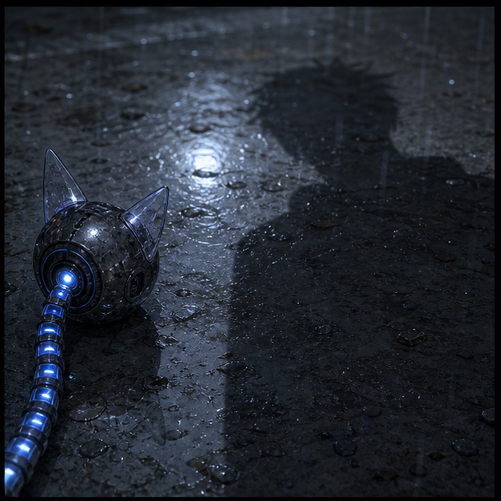
PASS ? V5_OP14-3_mioxing_warns_near_faint_shadow_keyframe_v1_PASS.png
源文件?episodes/season_01/episode_01/keyframes/v5_full_grid_batch_v1/V5_OP14-3_mioxing_warns_near_faint_shadow_keyframe_v1_PASS.png澜冰屿抬眼，下定决心。
机位 正面近景，克制。
声音 澜冰屿：“就差一句。”
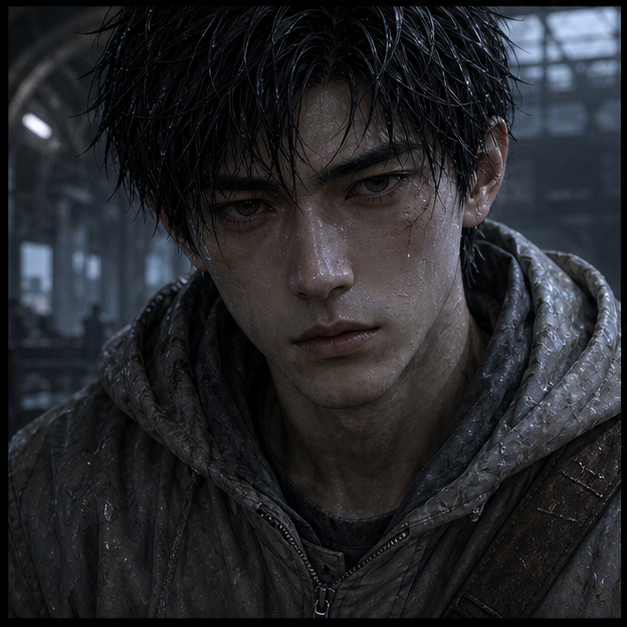
PASS ? V5_OP14-4_lan_decides_to_connect_echoes_keyframe_v1_PASS.png
源文件?episodes/season_01/episode_01/keyframes/v5_full_grid_batch_v1/V5_OP14-4_lan_decides_to_connect_echoes_keyframe_v1_PASS.png他伸手朝两段回声之间。
机位 手部近景。
声音 澜冰屿：“我接回来。”
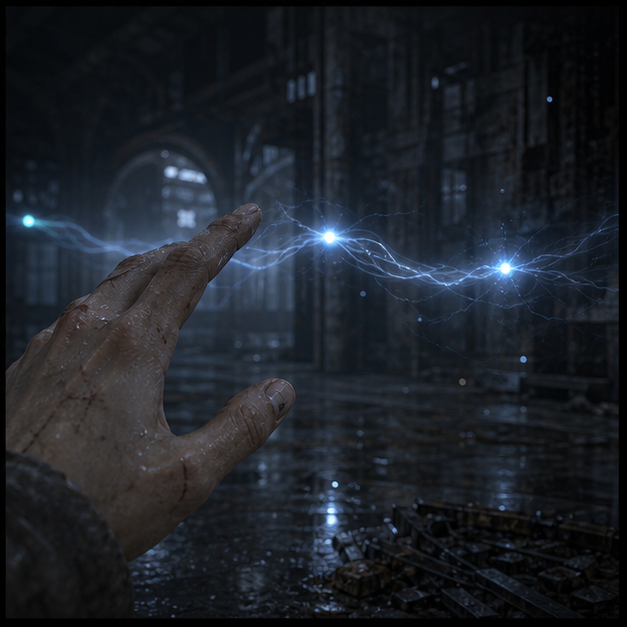
PASS ? V5_OP14-5_hand_reaches_between_echoes_keyframe_v1_PASS.png
源文件?episodes/season_01/episode_01/keyframes/v5_full_grid_batch_v1/V5_OP14-5_hand_reaches_between_echoes_keyframe_v1_PASS.png澜冰屿站在主广播台和应急通话器之间。
机位 中远景。
声音 两段残音错位。
NEEDS_REVIEW ? V5_OP15-1_澜冰屿站在两段回声之间_关键帧_v1.png
源文件?episodes/season_01/episode_01/keyframes/v5_op09_op23_batch_v1/V5_OP15-1_澜冰屿站在两段回声之间_关键帧_v1.png他的影子短暂变薄。
机位 地面影子特写。
声音 低频电流。
NEEDS_REVIEW ? V5_OP15-2_澜冰屿影子变淡_关键帧_v1.png
源文件?episodes/season_01/episode_01/keyframes/v5_op09_op23_batch_v1/V5_OP15-2_澜冰屿影子变淡_关键帧_v1.png记录屏闪出 B-07 警告。
机位 屏幕特写或反射。
声音 警告音很轻。
NEEDS_REVIEW ? V5_OP15-3_B07警告后期屏幕占位_关键帧_v1.png
源文件?episodes/season_01/episode_01/keyframes/v5_op09_op23_batch_v1/V5_OP15-3_B07警告后期屏幕占位_关键帧_v1.png澪星尾灯变暗又重新照住澜冰屿影子。
机位 低机位。
声音 尾灯微鸣。
PASS ? V5_OP15-4_澪星尾灯稳定澜冰屿影子_关键帧_v2_MIOXING_LOCK.png
源文件?episodes/season_01/episode_01/keyframes/v5_op09_op23_batch_v1/V5_OP15-4_澪星尾灯稳定澜冰屿影子_关键帧_v2_MIOXING_LOCK.png暖光闪回：妈妈蹲下整理小夏鞋子，手按紧魔术贴。
机位 低机位手部近景。
声音 魔术贴轻响。
NEEDS_REVIEW ? V5_OP16-1_妈妈整理小夏鞋子_关键帧_v1_NEEDS_REVIEW.png
源文件?episodes/season_01/episode_01/keyframes/v5_full_grid_batch_v1/V5_OP16-1_妈妈整理小夏鞋子_关键帧_v1_NEEDS_REVIEW.png小夏扶着妈妈肩膀，低头看鞋，日常温暖。
机位 中近景。
声音 车站环境声短暂变暖。
PASS ? V5_OP16-2_小夏扶妈妈肩膀看鞋_关键帧_v1_PASS.png
源文件?episodes/season_01/episode_01/keyframes/v5_full_grid_batch_v1/V5_OP16-2_小夏扶妈妈肩膀看鞋_关键帧_v1_PASS.png妈妈重新握住小夏的手。
机位 手部近景。
声音 手掌握紧声。
PASS ? V5_OP16-3_妈妈重新握住小夏的手_关键帧_v1_PASS.png
源文件?episodes/season_01/episode_01/keyframes/v5_full_grid_batch_v1/V5_OP16-3_妈妈重新握住小夏的手_关键帧_v1_PASS.png母女拉钩，阳光落在小指上。
机位 手部特写，轻慢镜感。
声音 妈妈：“会紧紧拉住小夏。”
PASS ? V5_OP16-4_母女拉钩阳光落在小指上_关键帧_v1_PASS.png
源文件?episodes/season_01/episode_01/keyframes/v5_full_grid_batch_v1/V5_OP16-4_母女拉钩阳光落在小指上_关键帧_v1_PASS.png小夏认真说拉钩不能反悔，妈妈点头。
机位 双人中近景。
声音 小夏 / 妈妈台词碎片。
PASS ? V5_OP16-5_xiaxia_promise_mother_nods_keyframe_v1_PASS.png
源文件?episodes/season_01/episode_01/keyframes/v5_full_grid_batch_v1/V5_OP16-5_xiaxia_promise_mother_nods_keyframe_v1_PASS.png暖光碎片被冷白电流切开，回到废站连接现场。
机位 暖光到冷灰蓝转场。
声音 电流切入。
PASS ? V5_OP16-6_warm_memory_cut_by_cold_current_keyframe_v1_PASS.png
源文件?episodes/season_01/episode_01/keyframes/v5_full_grid_batch_v1/V5_OP16-6_warm_memory_cut_by_cold_current_keyframe_v1_PASS.png事故当天电子屏故障、警报冷光切入暖光大厅。
机位 中远景快闪。
声音 系统警报。
PASS ? V5_OP17-1_emergency_screen_glitches_hall_keyframe_v2_PASS.png
源文件?episodes/season_01/episode_01/keyframes/v5_full_grid_batch_v1/V5_OP17-1_emergency_screen_glitches_hall_keyframe_v2_PASS.png人群反向涌回，妈妈把小夏护到身体内侧。
机位 中景快切。
声音 人群惊呼。
PASS ? V5_OP17-2_mother_protects_xiaxia_in_crowd_keyframe_v2_PASS.png
源文件?episodes/season_01/episode_01/keyframes/v5_full_grid_batch_v1/V5_OP17-2_mother_protects_xiaxia_in_crowd_keyframe_v2_PASS.png小夏右脚鞋被卡住脱落，白袜出现。
机位 低机位鞋部特写。
声音 行李碰撞、鞋滑脱。
NEEDS_REVIEW ? V5_OP17-3_right_shoe_slips_off_object_closeup_keyframe_v1_NEEDS_REVIEW.png
源文件?episodes/season_01/episode_01/keyframes/v5_full_grid_batch_v1/V5_OP17-3_right_shoe_slips_off_object_closeup_keyframe_v1_NEEDS_REVIEW.png隔离门升起，母女仍牵手，门体逼近小夏手臂。
机位 手部极近景。
声音 金属上升声。
PASS ? V5_OP17-4_isolation_gate_near_hands_keyframe_v1_PASS.png
源文件?episodes/season_01/episode_01/keyframes/v5_full_grid_batch_v1/V5_OP17-4_isolation_gate_near_hands_keyframe_v1_PASS.png妈妈保护性松手，把小夏挡向安全侧。
机位 中近景快切。
声音 妈妈：“小夏！”
NEEDS_REVIEW ? V5_OP17-5_mother_protective_release_at_gate_keyframe_v1_NEEDS_REVIEW.png
源文件?episodes/season_01/episode_01/keyframes/v5_full_grid_batch_v1/V5_OP17-5_mother_protective_release_at_gate_keyframe_v1_NEEDS_REVIEW.png妈妈被人潮推远，仍朝小夏方向伸手。
机位 长焦中景。
声音 小夏喊妈妈。
NEEDS_REVIEW ? V5_OP17-6_mother_pushed_far_still_turns_back_keyframe_v1_NEEDS_REVIEW.png
源文件?episodes/season_01/episode_01/keyframes/v5_full_grid_batch_v1/V5_OP17-6_mother_pushed_far_still_turns_back_keyframe_v1_NEEDS_REVIEW.png冷白光和灰尘吞没后半句，事故碎片断裂。
机位 小夏肩后远景。
声音 坍塌、电气爆音。
PASS ? V5_OP17-7_cold_light_dust_swallows_memory_keyframe_v1_PASS.png
源文件?episodes/season_01/episode_01/keyframes/v5_full_grid_batch_v1/V5_OP17-7_cold_light_dust_swallows_memory_keyframe_v1_PASS.png废站中前半句和后半句声波汇合。
机位 抽象空间中景。
声音 “回候车区等——”
PASS ? V5_OP18-1_echo_connection_climax_between_devices_keyframe_v1_PASS.png
源文件?episodes/season_01/episode_01/keyframes/v5_full_grid_batch_v1/V5_OP18-1_echo_connection_climax_between_devices_keyframe_v1_PASS.png后半句终于接上。
机位 小夏近景。
声音 “妈妈一定会来接你！”
PASS ? V5_OP18-2_hand_trembles_in_echo_current_keyframe_v1_PASS.png
源文件?episodes/season_01/episode_01/keyframes/v5_full_grid_batch_v1/V5_OP18-2_hand_trembles_in_echo_current_keyframe_v1_PASS.png小夏问“她不是不要我了吗？”
机位 小夏近景。
声音 小夏台词。
PASS ? V5_OP18-3_mioxing_lamp_dims_and_steadies_keyframe_v1_PASS.png
源文件?episodes/season_01/episode_01/keyframes/v5_full_grid_batch_v1/V5_OP18-3_mioxing_lamp_dims_and_steadies_keyframe_v1_PASS.png澜冰屿回答。
机位 澜冰屿近景。
声音 “不是。她一直在找回来的路。”
PASS ? V5_OP18-4_echoes_connect_warm_light_opens_keyframe_v1_PASS.png
源文件?episodes/season_01/episode_01/keyframes/v5_full_grid_batch_v1/V5_OP18-4_echoes_connect_warm_light_opens_keyframe_v1_PASS.png废站长椅前方出现一片柔和暖光，与冷灰蓝现实层分开。
机位 中远景，暖光从深处慢慢浮现。
声音 雨声变远。
PASS ? V5_OP19-1_废站长椅前暖光出现_关键帧_v1_PASS.png
源文件?episodes/season_01/episode_01/keyframes/v5_full_grid_batch_v1/V5_OP19-1_废站长椅前暖光出现_关键帧_v1_PASS.png妈妈的回声轮廓从暖光里走出。
机位 中景，轻微推近。
声音 衣料声、旧车站环境声。
PASS ? V5_OP19-2_妈妈回声轮廓从暖光走出_关键帧_v1_PASS.png
源文件?episodes/season_01/episode_01/keyframes/v5_full_grid_batch_v1/V5_OP19-2_妈妈回声轮廓从暖光走出_关键帧_v1_PASS.png妈妈蹲下到小夏高度，伸出手。
机位 中近景。
声音 妈妈：“对不起，妈妈来晚了。”
PASS ? V5_OP19-3_妈妈蹲下伸手道歉_关键帧_v1_PASS.png
源文件?episodes/season_01/episode_01/keyframes/v5_full_grid_batch_v1/V5_OP19-3_妈妈蹲下伸手道歉_关键帧_v1_PASS.png小夏不敢相信，慢慢向妈妈迈一步。
机位 小夏近景转双人同框。
声音 小夏呼吸发颤。
PASS ? V5_OP19-4_小夏不敢相信迈向妈妈_关键帧_v1_PASS.png
源文件?episodes/season_01/episode_01/keyframes/v5_full_grid_batch_v1/V5_OP19-4_小夏不敢相信迈向妈妈_关键帧_v1_PASS.png小夏终于跑向妈妈。
机位 中景，轻推。
声音 脚步声很轻。
PASS ? V5_OP20-1_小夏终于跑向妈妈_关键帧_v2_PASS.png
源文件?episodes/season_01/episode_01/keyframes/v5_full_grid_batch_v1/V5_OP20-1_小夏终于跑向妈妈_关键帧_v2_PASS.png小夏扑进妈妈怀里，妈妈抱住她。
机位 中近景。
声音 小夏抽泣。
PASS ? V5_OP20-2_小夏扑进妈妈怀里_关键帧_v1_PASS.png
源文件?episodes/season_01/episode_01/keyframes/v5_full_grid_batch_v1/V5_OP20-2_小夏扑进妈妈怀里_关键帧_v1_PASS.png妈妈把小夏护在怀里，像补上当年没完成的拥抱。
机位 近景，轻微环绕。
声音 妈妈轻声安抚。
PASS ? V5_OP20-3_妈妈护住小夏补上拥抱_关键帧_v1_PASS.png
源文件?episodes/season_01/episode_01/keyframes/v5_full_grid_batch_v1/V5_OP20-3_妈妈护住小夏补上拥抱_关键帧_v1_PASS.png小夏抬头看向澜冰屿，确认自己可以走了。
机位 小夏肩后反打澜冰屿。
声音 小夏：“我妈妈来接我了。”
PASS ? V5_OP20-4_小夏确认自己可以走了_关键帧_v1_PASS.png
源文件?episodes/season_01/episode_01/keyframes/v5_full_grid_batch_v1/V5_OP20-4_小夏确认自己可以走了_关键帧_v1_PASS.png妈妈牵着小夏走向暖光边缘。
机位 中远景。
声音 雨声减弱。
NEEDS_REVIEW ? V5_OP21-1_妈妈牵小夏走向暖光边缘_关键帧_v1_NEEDS_REVIEW.png
源文件?episodes/season_01/episode_01/keyframes/v5_full_grid_batch_v1/V5_OP21-1_妈妈牵小夏走向暖光边缘_关键帧_v1_NEEDS_REVIEW.png小夏忽然停下，回头。
机位 小夏中近景。
声音 无台词。
PASS ? V5_OP21-2_小夏忽然停下回头_关键帧_v1_PASS.png
源文件?episodes/season_01/episode_01/keyframes/v5_full_grid_batch_v1/V5_OP21-2_小夏忽然停下回头_关键帧_v1_PASS.png小夏认真问澜冰屿。
机位 小夏近景，暖光边缘。
声音 “大哥哥，你也有要等的人来接你吗？”
PASS ? V5_OP21-3_小夏认真反问澜冰屿_关键帧_v2_PASS.png
源文件?episodes/season_01/episode_01/keyframes/v5_full_grid_batch_v1/V5_OP21-3_小夏认真反问澜冰屿_关键帧_v2_PASS.png澜冰屿没有回答，只轻轻看着她。
机位 澜冰屿反打。
声音 雨声回到现实层。
NEEDS_REVIEW ? V5_OP21-4_澜冰屿沉默反打_关键帧_v1_NEEDS_REVIEW.png
源文件?episodes/season_01/episode_01/keyframes/v5_full_grid_batch_v1/V5_OP21-4_澜冰屿沉默反打_关键帧_v1_NEEDS_REVIEW.png小夏和妈妈进入暖光，光逐渐收束。
机位 中远景。
声音 暖光声场退去。
NEEDS_REVIEW ? V5_OP22-1_小夏和妈妈进入暖光_关键帧_v1_NEEDS_REVIEW.png
源文件?episodes/season_01/episode_01/keyframes/v5_full_grid_batch_v1/V5_OP22-1_小夏和妈妈进入暖光_关键帧_v1_NEEDS_REVIEW.png澜冰屿低头看地面，自己的影子明显变淡。
机位 地面影子特写。
声音 低频电流。
NEEDS_REVIEW ? V5_OP22-2_澜冰屿影子明显变淡_关键帧_v1_NEEDS_REVIEW.png
源文件?episodes/season_01/episode_01/keyframes/v5_full_grid_batch_v1/V5_OP22-2_澜冰屿影子明显变淡_关键帧_v1_NEEDS_REVIEW.png他摸向外套内侧坐标布条，字迹一段变白。
机位 手部近景。
声音 布料声。
PASS ? V5_OP22-3_坐标布条字迹一段变白_关键帧_v1_PASS.png
源文件?episodes/season_01/episode_01/keyframes/v5_full_grid_batch_v1/V5_OP22-3_坐标布条字迹一段变白_关键帧_v1_PASS.png旧记录屏 / 反射中第二次出现 B-07 存在痕迹下降。
机位 屏幕或积水反射特写。
声音 警告音很轻。
PASS ? V5_OP22-4_B07警告后期屏幕占位_关键帧_v1_PASS.png
源文件?episodes/season_01/episode_01/keyframes/v5_full_grid_batch_v1/V5_OP22-4_B07警告后期屏幕占位_关键帧_v1_PASS.png澜冰屿轻声说“我还记得路。至少现在还记得。”
机位 澜冰屿近景。
声音 澜冰屿台词。
PASS ? V5_OP22-5_澜冰屿我还记得路_关键帧_v1_PASS.png
源文件?episodes/season_01/episode_01/keyframes/v5_full_grid_batch_v1/V5_OP22-5_澜冰屿我还记得路_关键帧_v1_PASS.png地上的儿童鞋开始化成细小光点。
机位 鞋特写，固定。
声音 雨声渐弱。
PASS ? V5_OP23-1_儿童鞋开始化成细小光点_关键帧_v1_PASS.png
源文件?episodes/season_01/episode_01/keyframes/v5_full_grid_batch_v1/V5_OP23-1_儿童鞋开始化成细小光点_关键帧_v1_PASS.png光点消失后，地面只剩水痕，鞋不在了。
机位 低机位特写。
声音 电流残响消失。
PASS ? V5_OP23-2_鞋消失后只剩水痕_关键帧_v1_PASS.png
源文件?episodes/season_01/episode_01/keyframes/v5_full_grid_batch_v1/V5_OP23-2_鞋消失后只剩水痕_关键帧_v1_PASS.png镜头转到长椅扶手，密密麻麻“正”字刻痕仍留着。
机位 扶手特写，轻推。
声音 雨滴落在刻痕上。
PASS ? V5_OP23-3_长椅正字刻痕仍留着_关键帧_v1_PASS.png
源文件?episodes/season_01/episode_01/keyframes/v5_full_grid_batch_v1/V5_OP23-3_长椅正字刻痕仍留着_关键帧_v1_PASS.png画面暗下，片名《边界回声》出现。
机位 黑场或极暗废站轮廓。
声音 雨声渐停。
PASS ? V5_OP23-4_极暗废站轮廓片名后期位_关键帧_v1_PASS.png
源文件?episodes/season_01/episode_01/keyframes/v5_full_grid_batch_v1/V5_OP23-4_极暗废站轮廓片名后期位_关键帧_v1_PASS.png